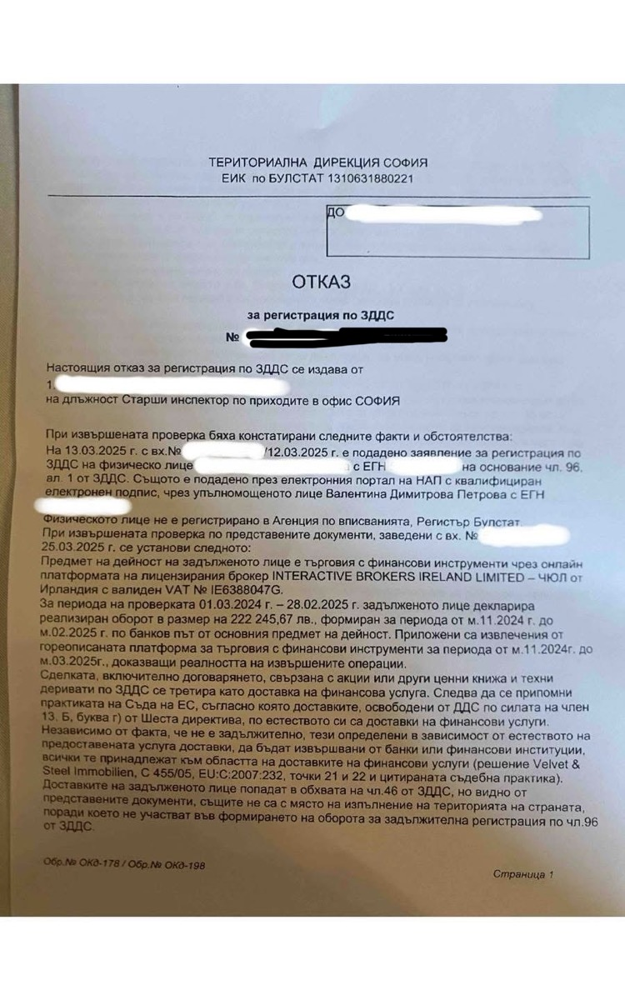
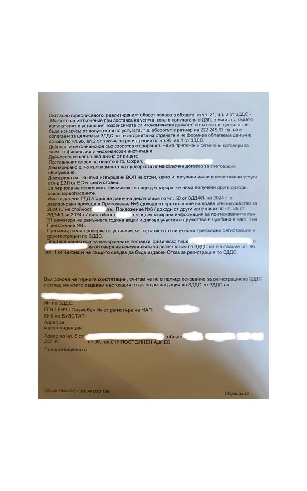

ДДС регистрация при търговия с акции и финансови инструменти чрез Interactive BrokersVAT Registration When Trading Shares and Financial Instruments via Interactive Brokers
Марина Мучакова
··14 мин четене14 min read
През последните месеци получаваме все повече въпроси от инвеститори и трейдъри, които търгуват
с акции и други финансови инструменти чрез Interactive Brokers и други чуждестранни инвестиционни
посредници. Най-често задаваният въпрос е:
„След като оборотът ми от продажба на финансови инструменти надхвърли прага за регистрация по
ЗДДС, задължен ли съм да се регистрирам?“
Отговорът не е еднозначен.
Самото достигане на определен размер на продажбите не означава автоматично, че е налице задължение
за регистрация по чл. 96 ЗДДС. Необходимо е да бъдат анализирани конкретната дейност, начинът на
извършване на сделките, отношенията с инвестиционния посредник и мястото на изпълнение на
съответните доставки.
В настоящата статия разглеждаме конкретен случай, при който след подадено заявление по чл. 96 ЗДДС
и извършена проверка НАП издава акт за отказ от регистрация.
Важно е още в началото да подчертаем, че всеки случай има свои особености. Изложената по-долу
аргументация не представлява универсално решение и не може да бъде прилагана механично спрямо всяко
лице, което инвестира или търгува с финансови инструменти.
Как започва процедурата
След подаване на заявление за регистрация по чл. 96 ЗДДС органът по приходите обичайно извършва
проверка на декларираните обстоятелства. В рамките на тази проверка заявителят може да получи искане
за представяне на документи и писмени обяснения от задължено лице, известно като ИПДПОЗЛ.
С искането могат да бъдат изискани документи и информация относно:
характера на извършваната дейност;
използвания инвестиционен посредник;
реализираните покупки и продажби;
размера на получения оборот;
банковите преводи;
договорните отношения с брокера;
начина и мястото на изпълнение на сделките;
извлеченията от инвестиционната платформа;
подаваните годишни данъчни декларации;
други доходи и стопански дейности на лицето.
Отговорът на това искане е особено важен, тъй като чрез него се представя фактическата и правната
обосновка на позицията на заявителя.
Основният въпрос: къде е мястото на изпълнение
Продажбата на акции и други финансови инструменти може да представлява освободена доставка по смисъла
на чл. 46 ЗДДС. Това обаче не означава, че всяка продажба автоматично участва във формирането на
оборота за задължителна регистрация по чл. 96 ЗДДС.
За да бъде включена дадена доставка при определянето на оборота, следва да бъдат изпълнени всички
приложими законови предпоставки. От значение са например:
дали лицето извършва независима икономическа дейност по смисъла на чл. 3 ЗДДС;
дали съответните доставки са част от основната му дейност;
дали мястото на изпълнение на доставките е на територията на България.
Тези предпоставки трябва да бъдат разгледани заедно, а не изолирано.
В конкретния случай основната аргументация е свързана с мястото на изпълнение на сделките и с ролята
на Interactive Brokers Ireland Limited при тяхното реализиране.
Как работи Interactive Brokers
Interactive Brokers Ireland Limited е инвестиционен посредник, установен в Ирландия.
За да използва платформата, всеки клиент сключва клиентско споразумение. В него са уредени правата и
задълженията на страните, както и начинът, по който брокерът приема, маршрутизира и изпълнява
клиентските поръчки.
От разпоредбите на клиентското споразумение могат да бъдат изведени няколко важни обстоятелства. Interactive Brokers може:
да избере пазара или дилъра, към който да насочи клиентската поръчка;
да използва автоматизирана система за интелигентно маршрутизиране;
да изпълни поръчката чрез друг брокер или свързано лице;
да изпълнява поръчките като агент, а в определени случаи и като принципал;
да откаже изпълнението на дадена поръчка;
да коригира или отмени отчетено изпълнение при наличие на грешка;
да осъществява собствена търговия, включително когато държи неизпълнени клиентски поръчки за същите финансови инструменти.
Това означава, че клиентът не определя във всички случаи конкретния пазар, контрагента и техническия
начин, по който ще бъде изпълнена поръчката.
Дори когато даден финансов инструмент е листнат на определена борса, действителното изпълнение може
да бъде отчетено на друг пазар, чрез различен търговски сегмент или посредством друг допустим
механизъм за изпълнение.
След приключването на операцията Interactive Brokers отразява резултата в клиентската сметка и в съответните отчети.
В българското гражданско и търговско право обичайно се разграничават пряко и косвено представителство.
При прякото представителство представителят действа от името и за сметка на представлявания. Правните
последици възникват непосредствено за представлявания.
При косвеното представителство представителят действа от свое име, но за сметка на друго лице. След
това резултатът от сделката се прехвърля или отчита на лицето, за чиято сметка е извършена тя.
С оглед на предоставената на брокера свобода при маршрутизирането и изпълнението на поръчките може да
бъде защитена тезата, че отношенията не се изчерпват с обикновено техническо посредничество между
инвеститора и конкретен краен купувач.
В тази хипотеза могат условно да се разграничат три етапа:
клиентът подава поръчка и оправомощава брокера да извърши определено действие;
брокерът организира или извършва покупката или продажбата при приложимите пазарни условия;
резултатът от операцията се отразява и отчита по клиентската сметка.
Тази конструкция е от значение при определянето на насрещната страна и мястото на изпълнение на доставката.
Interactive Brokers като инвестиционен посредник и участник на пазара
Interactive Brokers не функционира единствено като пасивна електронна платформа, която технически
свързва купувачи и продавачи.
Дружеството изпълнява функции на инвестиционен посредник и участва в процеса по маршрутизиране и
изпълнение на клиентските поръчки. В зависимост от конкретната сделка то може да действа като агент,
принципал или да използва друг брокер или свързано лице.
От тази гледна точка може да бъде обосновано становището, че правоотношенията на клиента са основно с
Interactive Brokers, а не непосредствено с неустановен краен купувач на дадена борса. Това
обстоятелство е съществено при анализа на мястото на изпълнение.
Данъчен статут на Interactive Brokers Ireland Limited
Interactive Brokers Ireland Limited е дружество, установено в Ирландия.
Дружеството има европейски ДДС номер и участва в икономическата дейност като данъчнозадължено лице.
При извършването на конкретна проверка е препоръчително актуалните регистрационни данни да бъдат
потвърдени чрез официални източници, тъй като адреси, регистрационни номера и други обстоятелства
могат да се променят.
Към писмените обяснения могат да бъдат приложени:
извлечение от официалния търговски регистър;
потвърждение за валидност на ДДС номера чрез системата VIES;
клиентското споразумение;
Activity Statement;
Trade Confirmation Report;
официални документи, от които се установява седалището на дружеството.
Приложение на чл. 21, ал. 2 ЗДДС
Съгласно чл. 21, ал. 2 ЗДДС мястото на изпълнение при доставка на услуга, когато получателят е
данъчнозадължено лице, е мястото, където получателят е установил независимата си икономическа дейност.
Когато услугата е предоставена на постоянен обект, намиращ се на друго място, мястото на изпълнение е
там, където се намира този постоянен обект. Ако липсват място на установяване и постоянен обект,
мястото на изпълнение е мястото на постоянния адрес или обичайното пребиваване на получателя.
При аргументацията в разглеждания случай е застъпено становището, че Interactive Brokers е получателят
по доставките, свързани с продажбата на финансовите инструменти. Тъй като дружеството е установено в
Ирландия, мястото на изпълнение се определя извън територията на България.
Защо отчетите на брокера са важни
Особено значение имат двата основни вида отчети, които клиентът може да изтегли от инвестиционната платформа.
Activity Statement
Activity Statement съдържа обобщена информация за:
притежаваните финансови инструменти;
движението по сметката;
покупките и продажбите;
начислените такси и комисиони;
реализираните и нереализираните резултати;
пазара или борсата, на която съответният инструмент е листнат.
Trade Confirmation Report
Trade Confirmation Report съдържа конкретни данни за изпълнението на отделните поръчки, включително:
дата и час;
количество;
цена;
пазар или сегмент на изпълнение;
комисиони;
други детайли по транзакцията.
Съпоставката между двата отчета може да покаже, че борсата, на която даден инструмент е листнат, не
винаги съвпада с мястото или механизма, чрез който е изпълнена конкретната поръчка.
Това подкрепя тезата, че брокерът разполага с оперативна самостоятелност при изпълнението на поръчките
и не е само неутрална платформа за публикуване на оферти.
Техническото изпълнение на поръчките
Когато клиентът нареди продажба на финансов актив, той не прехвърля самостоятелно акциите си на избран
от него купувач. Техническото изпълнение преминава през инфраструктурата на брокера, съответните
пазари, клирингови системи и депозитари.
Клиентът вижда крайния резултат в своя акаунт, но обикновено не участва пряко в:
избора на конкретния контрагент;
клиринга на сделката;
сетълмента;
избора на търговски сегмент;
прехвърлянето на финансовите инструменти;
вътрешните операции на брокера.
Тази фактическа обстановка е важна при определянето на естеството на отношенията между инвеститора и инвестиционния посредник.
Кога оборотът може да не се включи при регистрацията
За да участва определен оборот при формиране на прага за задължителна регистрация по чл. 96 ЗДДС, не е
достатъчно единствено да е реализирана значителна стойност на продажбите. Следва да се установи:
че е налице независима икономическа дейност;
че финансовите сделки са част от основната дейност на лицето, когато това е релевантно;
че доставките попадат в приложното поле на ЗДДС;
че мястото на изпълнение е на територията на България;
че стойността им следва да бъде включена в облагаемия оборот.
Когато мястото на изпълнение е извън България, съответните доставки не формират оборот за регистрация
по чл. 96 ЗДДС на това основание.
Какво прие НАП в конкретния случай
В разглеждания случай органът по приходите приема, че:
извършените сделки са свързани с финансови инструменти;
мястото им на изпълнение не е на територията на България;
реализираният оборот не формира облагаем оборот по чл. 96 ЗДДС;
не е налице основание за задължителна регистрация.
В резултат е издаден акт за отказ от регистрация по ЗДДС. Този акт е важен практически пример, но не
създава автоматично приложимо правило за всички инвеститори и трейдъри.

Акт за отказ от регистрация по ЗДДС — страница 1 (личните данни са заличени).

Акт за отказ от регистрация по ЗДДС — страница 2 (личните данни са заличени).
Какви документи могат да бъдат представени
При отговор на ИПДПОЗЛ могат да бъдат приложени следните документи:
клиентско споразумение с Interactive Brokers;
Activity Statement за проверявания период;
Trade Confirmation Report;
банкови извлечения;
доказателства за внесените лични средства;
справка за данъчната регистрация на брокера;
справка за седалището и адреса на брокера;
годишна данъчна декларация;
приложенията към нея;
справка за други доходи;
декларация относно липсата или наличието на други стопански дейности;
обяснение относно начина на подаване и изпълнение на поръчките;
други документи, изрично поискани от органа по приходите.
Не е необходимо във всеки случай да бъдат представяни всички изброени документи. Подборът им трябва да
бъде съобразен с конкретното искане на НАП и с фактическата обстановка.
Важни уточнения
Различен резултат може да бъде получен при:
използване на друг инвестиционен посредник;
различно клиентско споразумение;
търговия чрез дружество;
професионално управление на чужди средства;
извършване на дейността по занятие;
предоставяне на инвестиционни или консултантски услуги;
търговия за сметка на други лица;
наличие на персонал, офис или специална организация;
използване на алгоритмични системи като организирана стопанска дейност;
получаване на други възнаграждения или комисиони;
различен начин на изпълнение и сетълмент на сделките.
Поради това не следва да се изхожда единствено от размера на оборота или от факта, че се използва същият брокер.
Примерен отговор на ИПДПОЗЛ
За да улесним максимално данъчните хакери, прилагаме примерен отговор на изпратено до кантората ни
ИПДПОЗЛ, по заявлението по което сме получили акт за отказ от регистрация.
Естествено, всеки случай е уникален и неповторим. Текстът не може да бъде използван наготово, а следва
да бъде персонализиран спрямо конкретната дейност, фактическата обстановка, използвания инвестиционен
посредник и представените документи.
Писмени обяснения
От …..
Във връзка с Искане ………………..
Уважаема г-жо Инспектор по Приходите,
Отговарям на отправеното ми искане ИПДПОЗЛ номер ………………….. от дата …………………..,
връчено на ………………………………. Както следва:
По силата на това споразумение всеки клинет може да купува и продава финансови активи през тяхната
платформа, като заплаща за това такси и комисионни на брокера, както и спазва определени правила.
Част от тези правила засягат начина, по който се сключват сделките в платформата на брокера, а именно:
Превод:
5. Маршрутизиране на поръчки: Освен ако не е указано друго, IB ще избере пазара/дилъра, към който да
изпрати поръчките на Клиента. За продукти, търгувани на множество пазари, IB може да предостави
„Интелигентно маршрутизиране“, което търси най-добрия пазар за всяка поръчка чрез компютърен алгоритъм.
Клиентът трябва да избере Интелигентно маршрутизиране, ако е налично. Ако Клиентът насочва поръчките към
определен пазар, Клиентът поема отговорността да знае и да търгува в съответствие с правилата и
политиките на този пазар (напр., търговски часове, видове поръчки и т.н.). IB не може да гарантира
изпълнението на всяка поръчка на най-добрата обявена цена: IB може да няма достъп до всеки пазар/дилър;
други поръчки може да се изпълнят преди; пазарните центрове може да не зачитат обявените цени или да
пренасочват поръчките за ръчна обработка; или пазарните правила, решения или системни повреди може да
предотвратят/забавят изпълнението на поръчките на Клиента или да доведат до това, че поръчките да не
получат най-добрата цена.
Превод:
7. Отмяна/Промяна на поръчка: Клиентът признава, че може да не е възможно да се отмени/промени поръчка и
че Клиентът носи отговорност за изпълненията, независимо от заявка за отмяна/промяна.
8. Изпълнение на поръчка: IB ще изпълнява поръчките на Клиента като агент, освен ако не е потвърдено
друго. IB може да изпълнява поръчките на Клиента като принципал. IB може да използва друг брокер или
афилирано лице за изпълнение на поръчки, като те се ползват от всички права на IB по настоящите условия.
IB може да откаже всяка поръчка на Клиента или да прекрати използването на услугите на IB от страна на
Клиента по всяко време по свое усмотрение. Всички транзакции са предмет на правилата и политиките на
съответните пазари и клирингови къщи, както и на приложимите закони и разпоредби. IB НЕ НОСИ ОТГОВОРНОСТ
ЗА ВСЯКО ДЕЙСТВИЕ ИЛИ РЕШЕНИЕ НА КОЯТО И ДА Е БОРСА, ПАЗАР, ДИЛЪР, КЛИРИНГОВА КЪЩА ИЛИ РЕГУЛАТОР.
Превод:
9. Потвърждения и грешки при отчитане:
А. Клиентът се съгласява да следи всяка поръчка, докато IB потвърди изпълнението или отмяната ѝ. Клиентът
признава, че потвържденията за изпълнение или отмяна може да бъдат забавени или да са грешни (напр. поради
проблеми с компютърните системи) или може да бъдат отменени/коригирани от борсата. Клиентът е задължен от
действителното изпълнение на поръчката, ако то съответства на поръчката на Клиента. Ако IB потвърди
изпълнение или отмяна по грешка и Клиентът забави докладването на такава грешка, IB си запазва правото да
премахне сделката от сметката или да изиска от Клиента да приеме сделката, по преценка на IB.
Б. Клиентът се съгласява да приема електронни потвърждения за сделки вместо печатени потвърждения (виж
Допълнение 1, „Съгласие на Клиента за получаване на електронни записи и съобщения“).
В. Клиентът се съгласява незабавно да уведоми IB по телефона или електронно чрез уебсайта на IB, ако:
i) Клиентът не получи точно потвърждение за изпълнение или отмяна;
ii) Клиентът получи потвърждение, което се различава от поръчката му;
iii) Клиентът получи потвърждение за поръчка, която не е направил; или
iv) Клиентът получи извлечение от сметка, потвърждение или друга информация, която отразява неточни
поръчки, сделки, салда, позиции, маргинален статус или история на транзакциите. Клиентът признава, че IB
може да коригира сметката на Клиента, за да поправи всяка грешка. Клиентът се съгласява незабавно да върне
на IB всички активи, които са му били изпратени по грешка.
Превод:
10. Собствена търговия – Показване на поръчките на Клиента: Съгласно всички приложими закони и разпоредби,
Клиентът упълномощава IB да извършва собствена търговия за себе си и своите афилирани лица, въпреки че IB
може едновременно да държи неизпълнени поръчки на Клиента за същите продукти на същата цена.
Излиза, че когато клиент въведе поръчка, Интерактив Брокерс имат право да изберат на кой пазар да се
случи, да изберат цената, по която да изпълнят поръчката, дори и тя да е лимитирана (т.е. ще продадат
на по-ниска стойност, а на мен ще ми прехвърлят резултата според цената, която съм посочил и ще задържат
разликата); да изменят момента, в който да се случи и дали изобщо да я изпълнят. Листингът може да е на
една борса, а изпълението може да е на съвсем различна и даже да не е на борсов сегмент.
След това ще отчетат резултатите в електронната платформа и аз като техен клинет следва да ги приема
такива каквито са.
В гражданското ни право, действащо към момента, съществуват 2 вида представителство- пряко и косвено.
При прякото представителство аз упълномощавам моя представител да действа при строго дефинирани условия
за цени, вид на покупката или на продажбата и пазар. Случаят тук не е този.
Вторият вид представителство е косвеното представителство, при което представителят влиза „в обувките“
на търговец, договаря от свое име и за своя сметка и в последствие прехвърля резултата на титуляра.
Нашият случай е такъв.
Съответно тук имаме 3 сделки:
1. Въвеждане на поръчка, с която оправомощавам ИБ да купуват или продават;
2. Сделката по покупка или продажба, която те сключват на цена и на пазар по тяхно усмотрение;
3. Прехвърлителна сделка, с която ми отчитат резултата в акаунта.
При тези обстоятелства мога да твърдя съвсем обосновано, че моите правоотношения са с Интерактив
брокерс, които не функционират като обикновен маркетплейс, ами са маркетмейкър по смисъла на Директивата
MIFID II и като такъв участват хем в осигуряването на ликвидност на пазара, хем действат като посредник
между инвеститорите, хем са търговец, който участва в търговията за собствена сметка, в това число и със
своите клинети, в случая с мен.
Интерактив Брокер са базирани в Ирландия, като юридическият им адрес фигурира на всички извлечения от
акаунта ми, включително на 1ва страница в Activity Statement и отговарят на всички изисквания за данъчно
задължено лице по смисъла на Регламта за прилагане на Директива 112/2006 ЕО (Директивата за ДДС), член
13-24 включително, а именно: (линк:
https://eur-lex.europa.eu/legal-content/BG/ALL/?uri=celex%3A32011R0282)
Член 13
„Обичайното местоживеене“ на физическо лице, независимо от това дали то е данъчнозадължено лице или не,
посочено в Директива 2006/112/ЕО, е мястото, където физическото лице обичайно живее поради лични и
професионални връзки.
Когато държавите на професионалните връзки и на личните връзки са различни или когато не съществуват
професионални връзки, мястото на обичайното местоживеене се определя от личните връзки, които показват
тясна връзка между лицето и мястото, където то живее.
РАЗДЕЛ 4
Място на доставка на услуги
(Членове 43—59 от Директива 2006/112/ЕО)
Подраздел 1
Статут на получателя Член 17
1. Ако мястото на доставка на услуги зависи от това дали получателят е данъчнозадължено лице или данъчно
незадължено лице, статутът на получателя се определя въз основа на членове 9—13 и член 43 от Директива
2006/112/ЕО.
2. Данъчно незадължено юридическо лице, което е регистрирано или е задължено да се регистрира за целите
на ДДС в съответствие с член 214, параграф 1, буква б) от Директива 2006/112/ЕО поради това, че
извършваните от него вътреобщностни придобивания на стоки подлежат на облагане с ДДС или защото е
упражнило правото си на избор да подлежи на облагане с ДДС за извършваните от него придобивания, е
данъчнозадължено лице по смисъла на член 43 от посочената директива.
Член 18
1. Освен ако не разполага с информация за противното, доставчикът на услуги може да счита, че получател,
установен в Общността, има статут на данъчнозадължено лице:
а) когато получателят му е съобщил идентификационния си номер по ДДС и доставчикът получи потвърждение за
валидността на този идентификационен номер и за свързаното с него име и адрес в съответствие с член 31 от
Регламент (ЕО) № 904/2010 на Съвета от 7 октомври 2010 г. относно административното сътрудничество и
борбата с измамите в областта на данъка върху добавената стойност (5);
б) когато получателят все още не е получил идентификационен номер по ДДС, но информира доставчика, че е
подал заявление за такъв и доставчикът се сдобива с каквото и да е друго доказателство за това, че
получателят е данъчнозадължено лице или данъчно незадължено юридическо лице, което е задължено да се
регистрира за целите на ДДС, и извърши проверка в разумна степен на точността на информацията, предоставена
му от получателя, с помощта на обичайните търговски мерки за сигурност като мерките, свързани с проверките
на самоличността и на плащанията.
2. Освен ако не разполага с информация за противното, доставчикът на услуги може да счита, че получател,
установен в Общността, има статут на данъчно незадължено лице, когато докаже, че този получател не му е
съобщил идентификационния си номер по ДДС.
3. Освен ако не разполага с информация за противното, доставчикът на услуги може да счита, че получател,
установен извън Общността, има статут на данъчнозадължено лице:
а) ако получи от получателя удостоверение, издадено от компетентния данъчен орган на получателя, в
потвърждение на факта, че получателят извършва стопанска дейност, с цел да му се предостави възможност да
получи възстановяване на ДДС по силата на Директива 86/560/ЕИО на Съвета от 17 ноември 1986 г. относно
хармонизиране на законодателствата на държавите-членки в областта на данъците върху оборота — правила за
възстановяване на данъка върху добавената стойност на данъчнозадължени лица, които не са установени на
територията на Общността (6);
б) когато получателят не разполага с това удостоверение, ако доставчикът разполага с идентификационния номер
по ДДС или подобен номер, изпълняващ същата функция, предоставен на получателя от страната по установяване
и използван за идентифициране на данъчнозадължени лица или с всяко друго доказателство за това, че
получателят е данъчнозадължено лице и ако доставчикът извърши проверка в разумна степен на точността на
информацията, предоставена му от получателя, с помощта на обичайните търговски мерки за сигурност като
мерките, свързани с проверките на самоличността и на плащанията.
Подраздел 2
Качество на получателя Член 19
За целите на прилагане на правилата относно мястото на доставка на услугите, установени в членове 44 и 45
от Директива 2006/112/ЕО, данъчнозадължено лице или данъчно незадължено юридическо лице, считано за
данъчнозадължено лице, което получава услуги изключително за лично ползване, включително за нуждите на своя
персонал, се счита за данъчно незадължено лице.
Освен ако не разполага с информация за противното, например относно естеството на предоставените услуги,
доставчикът може да счита, че услугите са предназначени за целите на стопанската дейност на получателя,
когато за съответната доставка той му е съобщил идентификационния си номер по ДДС.
Когато една-единствена услуга е предназначена както за лично ползване, включително за нуждите на персонала
на получателя, така и за целите на стопанската дейност, предоставянето на тази услуга попада изключително
в обхвата на член 44 от Директива 2006/112/ЕО, ако не съществува никаква практика на злоупотреба.
Подраздел 3
Местоположение на получателя Член 20
Когато дадена доставка на услуги, извършена в полза на данъчнозадължено лице или данъчно незадължено
юридическо лице, считано за данъчнозадължено лице, попада в обхвата на член 44 от Директива 2006/112/ЕО, и
когато това данъчнозадължено лице е установено в една-единствена държава или, при отсъствие на място на
установяване на стопанска дейност или на постоянен обект, постоянният му адрес и обичайното му местоживеене
се намират в една-единствена държава, доставката на услуги се облага в тази държава.
Доставчикът установява това място въз основа на информация от получателя и проверява тази информация с
помощта на обичайните търговски мерки за сигурност като проверките на самоличността и на плащанията.
Информацията може да включва идентификационния номер по ДДС, предоставен от държавата-членка, в която е
установен получателят.
Член 21
Когато дадена доставка на услуги към данъчнозадължено лице или на данъчно незадължено юридическо лице,
считано за данъчнозадължено лице, попада в обхвата на член 44 от Директива 2006/112/ЕО, и данъчнозадълженото
лице е установено в повече от една държава, тази доставка на услуги се облага в държавата, в която
посоченото данъчнозадължено лице е установило мястото на стопанската си дейност.
При все това когато услугата се доставя на постоянен обект на данъчнозадължено лице, който се намира в място,
различно от това, където получателят е установил мястото на стопанската си дейност, тази доставка се облага
в мястото на постоянния обект, който получава услугата и я ползва за собствените си нужди.
Когато данъчнозадълженото лице няма място на установяване на стопанска дейност, нито постоянен обект,
услугата се облага на мястото на неговия постоянен адрес или обичайно местоживеене.
Член 22
1. С оглед да се определи постоянният обект на получателя, на който се предоставя услугата, доставчикът
разглежда естеството и използването на предоставената услуга.
В случай че естеството и използването на предоставените услуги не му позволяват да установи постоянния
обект, на който са предоставени услугите, определяйки този постоянен обект, доставчикът обръща особено
внимание на това дали в договора, във формуляра за поръчка и от идентификационния номер по ДДС, предоставен
от държавата-членка на получателя и съобщен му от получателя, постоянният обект се определя като получател
на услугите и дали постоянният обект е субектът, който плаща за услугите.
Когато постоянният обект на получателя, на когото са предоставени услугите, не може да бъде определен по
смисъла на първата и втората алинея от настоящия параграф или когато услуги, попадащи в обхвата на член 44
от Директива 2006/112/ЕО, са доставени на данъчнозадължено лице по силата на договор, обхващащ една или
повече услуги, предназначени за използване по неустановим и количествено неизмерим начин, доставчикът на
услуги може с пълно основание да счита, че услугите са доставени там, където получателят е установил
стопанската си дейност.
2. Прилагането на настоящия член не засяга задълженията на получателя.
Член 23
1. От 1 януари 2013 г., когато, в съответствие с член 56, параграф 2, първа алинея от Директива
2006/112/ЕО, дадена доставка на услуги се облага в мястото, където е установен получателят, или при
отсъствие на такова, в мястото на постоянния му адрес или на обичайното му местоживеене, доставчикът
установява това място въз основа на фактическа информация, предоставена от получателя, и проверява тази
информация с помощта на обичайните търговски мерки за сигурност като мерките, свързани с проверките на
самоличността и на плащанията.
2. Когато, в съответствие с членове 58 и 59 от Директива 2006/112/ЕО, дадена доставка на услуги се облага
в мястото, където е установен получателят, или при отсъствие на такова, в мястото на постоянния му адрес
или на обичайното му местоживеене, доставчикът установява това място въз основа на фактическа информация,
предоставена от получателя, и проверява тази информация с помощта на обичайните търговски мерки за
сигурност като мерките, свързани с проверките на самоличността и на плащанията.
Член 24
1. От 1 януари 2013 г., когато доставки, обхванати от член 56, параграф 2, първа алинея от Директива
2006/112/ЕО, са доставени на данъчно незадължено лице, което е установено в повече от една държава, има
постоянен адрес в една държава, а обичайното му местоживеене е в друга държава, при определяне на мястото
на доставка на тези услуги предимство се предоставя на мястото, в което облагането е осигурено най-добре,
пред мястото на действителното потребление на услугите.
2. Когато услуги, обхванати от членове 58 и 59 от Директива 2006/112/ЕО, са доставени на данъчно
незадължено лице, което е установено в повече от една държава или има постоянен адрес в една държава, а
обичайното му местоживеене е в друга държава, при определяне на мястото на доставка на тези услуги
предимство се предоставя на мястото, в което облагането е осигурено най-добре, пред мястото на
действителното потребление на услугите.
Информацията, свързана с VAT (ДДС) номер, адрес и регистрация на Interactive Brokers Ireland в
Европейската система EORI (European Union Registration and Identification), е публично достъпна, но
трябва да се провери директно чрез официални източници поради възможни промени. Ето данните, които мога
да предоставя:
1. VAT номер (ДДС номер):
- VAT номерът на Interactive Brokers Ireland е: IE6388047G.
Този номер може да се провери в европейската система VIES:
https://ec.europa.eu/taxation_customs/vies/
, която потвърждава валидността на ДДС регистрациите в ЕС.
2. Адрес на регистрация:
- Interactive Brokers Ireland Limited
Registered Office:
10 Earlsfort Terrace, Dublin 2, D02 T380, Ireland.
Това е основният регистриран адрес на дружеството в Ирландия.
3. Регистрация в ЕИОП (EORI):
- EORI номерът се използва за митнически цели в ЕС. Ако Interactive Brokers Ireland
извършва дейности, свързани с внос/износ на стоки (което е малко вероятно, тъй като те са финансов
посредник), техният EORI номер би бил свързан с VAT номера им.
- Примерен формат за Ирландия: IE6388047G ,съвпадащ с VAT номера, но с допълнителни
символи.
За точно потвърждение се препоръчва да се свържете директно с Interactive Brokers или да
проверите чрез митническите власти на Ирландия
https://www.revenue.ie/
Важни бележки:
- За EORI регистрация: Финансовите институции обикновено нямат EORI номер, освен ако не извършват
митнически операции.
Ако имате нужда от официално потвърждение, можете да се свържете с Interactive Brokers директно на:
- Поддръжка за клиенти: +353 1 603 7250 (Ирландия)
- Официален уебсайт:
www.interactivebrokers.ie
На основание на предоставената информация, считам , че отговарям на изискванията на чл. 21, ал 2 от ЗДДС,
а именно:
(2) Мястото на изпълнение при доставка на услуга, когато получателят е данъчно задължено лице, е мястото,
където получателят е установил независимата си икономическа дейност. Когато тези услуги се предоставят на
постоянен обект, който се намира на място, различно от мястото, където получателят е установил
независимата си икономическа дейност, то мястото на изпълнение е мястото, където се намира този обект.
Когато няма място на установяване на независима икономическа дейност или постоянен обект, мястото на
изпълнение на доставката е мястото на постоянния адрес или обичайното пребиваване на получателя.
Когато аз продавам финансови активи, моите продажби са освободени от ЗДДС на основание на чл. 46 ЗДДС, но
трупам оборот за регистрация по чл. 96 ЗДДС, 1) когато моята дейност се счита за основна, 2) приема се за
независима иконимическа дейност по чл. 3 от ЗДДС и 3) оборотът е натрупан на територията на България.
Тези 3 условия следва да са налице едновременно. При мен не всички са налице.
Съгласно описаната фактическа обстановка по-горе, считам, че Интерактив Брокерс са в качеството си на
купувач, когато продавам акции и други финансови активи;
Като допълнително доказателство, моля да имате предвид, че в раздел Financial Instruments Information от
приложения Activity Statement като листинг на притежаваните и продадените от мен активи са посочени
конкретни борси.
В същото време в справката Trades Confirmation report са дадени реално къде са изпълнени поръчките.
Казано с прости думи моите акции няма как сами да се преместят на други борси или сегменти. А за да се
преместят физически, трябва да се обърнат в поименни акции и да се премине през процедура по clearing.
Това просто е невъзможно да се получи без мое дейно участи и без участието на депозитар.
Следователно е невъзможно да държа акции, които са листнати например на борсата Ксетра в Германия (с
тикер IBIS или IBIS2), и да ги продам на сегмента DARK, примерно, който изобщо не е борса.
Понеже Интерактив Брокерс имат покритие на много пазари, ето какво става технически.
Когато искам да продам актив, без значение къде е листнат, те продават техен там, където финансово
най-много им изнася, след което «прибират» моя актив от акаунта ми и ми превеждат стойността му, демек
изкупуват го.
Именно това е описано като процес в частта “5. маршрутизиране на поръчките” в точка 5 от подписаното с
тях клинетско споразумение.
Интерактив Брокерс имат седалище в ЕС – в Ирландия. , т.е. те са местно лице за ЕС.
Интеркатив Брокерс имат европейски ДДС номер - IE6388047G
Интеркатив Брокерс имат статут на данъчно задължено лице в ЕС.
Сделките са онлайн, следователно мястото на изпълнение следва да се определи като „мястото на постоянния
адрес или обичайното пребиваване на получателя“, което в случая е Ирландия.
На основание на изброените, моля да приемете за доказано, че оборотът е натрупан в Ирландия и да
постановите акт за отказ от ДДС.
С уважение: ……………………..
Настоящият материал има общ информационен характер. Той не представлява индивидуална данъчна, правна
или счетоводна консултация. Преди подаване на заявление за регистрация по ЗДДС или отговор до НАП
конкретните факти и документи следва да бъдат прегледани от квалифициран специалист.
Поздрави, Марина Мучакова
Over recent months we have received a growing number of questions from investors and traders who deal
in shares and other financial instruments through Interactive Brokers and other foreign investment
firms. The most frequent question is:
“Now that my turnover from selling financial instruments has exceeded the VAT registration threshold,
am I obliged to register?”
The answer is not clear-cut.
Reaching a certain volume of sales does not automatically create an obligation to register under
Art. 96 of the Bulgarian VAT Act. The specific activity, the manner in which the trades are carried out,
the relationship with the investment firm and the place of supply of the relevant supplies all have to be
analysed.
This article examines a concrete case in which, after an application under Art. 96 of the VAT Act was
filed and a review carried out, the Bulgarian Revenue Agency (NRA) issued an act refusing registration.
It is important to stress at the outset that every case has its own particularities. The reasoning set
out below is not a universal solution and cannot be applied mechanically to every person who invests or
trades in financial instruments.
How the procedure starts
After an application for registration under Art. 96 of the VAT Act is filed, the revenue authority
normally carries out a review of the declared circumstances. As part of that review the applicant may
receive a demand for the submission of documents and written explanations from an obligated person, known
as an “ИПДПОЗЛ”.
The demand may request documents and information regarding:
the nature of the activity carried out;
the investment firm used;
the purchases and sales made;
the amount of turnover received;
the bank transfers;
the contractual relationship with the broker;
the manner and place of execution of the trades;
the statements from the investment platform;
the annual tax returns filed;
other income and business activities of the person.
The response to this demand is especially important, because it is where the factual and legal basis of
the applicant’s position is presented.
The key question: where is the place of supply
The sale of shares and other financial instruments may constitute an exempt supply within the meaning of
Art. 46 of the VAT Act. That, however, does not mean that every sale automatically counts towards the
turnover for mandatory registration under Art. 96 of the VAT Act.
For a given supply to be included when determining turnover, all applicable statutory preconditions must
be met. What matters, for example, is:
whether the person carries out an independent economic activity within the meaning of Art. 3 of the VAT Act;
whether the relevant supplies are part of that person’s main activity;
whether the place of supply is on the territory of Bulgaria.
These preconditions must be considered together, not in isolation.
In the case at hand the main line of reasoning concerns the place of execution of the trades and the role
of Interactive Brokers Ireland Limited in carrying them out.
How Interactive Brokers works
Interactive Brokers Ireland Limited is an investment firm established in Ireland.
In order to use the platform, every client enters into a client agreement. It governs the rights and
obligations of the parties, as well as the manner in which the broker accepts, routes and executes client
orders.
Several important circumstances can be derived from the provisions of the client agreement. Interactive Brokers may:
select the market or dealer to which the client order is routed;
use an automated smart-routing system;
execute the order through another broker or an affiliate;
execute orders as agent and, in certain cases, as principal;
decline to execute a given order;
correct or cancel a reported execution where there is an error;
carry out proprietary trading, including while holding unexecuted client orders for the same financial instruments.
This means that the client does not, in every case, determine the specific market, the counterparty and
the technical manner in which the order will be executed.
Even where a financial instrument is listed on a particular exchange, the actual execution may be reported
on another market, through a different trading segment, or by means of another permissible execution
mechanism.
After the operation is completed, Interactive Brokers records the result in the client account and in the relevant reports.
Bulgarian civil and commercial law usually distinguishes between direct and indirect representation.
In direct representation the representative acts in the name and on the account of the represented person.
The legal consequences arise directly for the represented person.
In indirect representation the representative acts in their own name, but on the account of another
person. The result of the transaction is then transferred or accounted for to the person on whose account
it was carried out.
Given the freedom granted to the broker in routing and executing orders, it can be argued that the
relationship is not exhausted by mere technical intermediation between the investor and a specific end
buyer.
In this scenario three stages can conditionally be distinguished:
the client places an order and authorises the broker to carry out a certain action;
the broker arranges or carries out the purchase or sale under the applicable market conditions;
the result of the operation is recorded and accounted for in the client account.
This construction is relevant when determining the counterparty and the place of supply.
Interactive Brokers as an investment firm and market participant
Interactive Brokers does not function merely as a passive electronic platform that technically connects
buyers and sellers.
The company performs the functions of an investment firm and takes part in the process of routing and
executing client orders. Depending on the specific trade, it may act as agent, principal, or use another
broker or an affiliate.
From this standpoint it can be argued that the client’s legal relationship is essentially with Interactive
Brokers, and not directly with an unidentified end buyer on a given exchange. This circumstance is
material to the place-of-supply analysis.
Tax status of Interactive Brokers Ireland Limited
Interactive Brokers Ireland Limited is a company established in Ireland.
The company has an EU VAT number and participates in economic activity as a taxable person.
When carrying out a specific review it is advisable to confirm the current registration details through
official sources, since addresses, registration numbers and other circumstances may change.
The written explanations may be accompanied by:
an extract from the official commercial register;
confirmation of the validity of the VAT number through the VIES system;
the client agreement;
the Activity Statement;
the Trade Confirmation Report;
official documents establishing the company’s seat.
Application of Art. 21(2) of the VAT Act
Under Art. 21(2) of the VAT Act, the place of supply of a service, where the recipient is a taxable
person, is the place where the recipient has established its independent economic activity.
Where the service is supplied to a fixed establishment located elsewhere, the place of supply is where
that fixed establishment is located. In the absence of a place of establishment and a fixed establishment,
the place of supply is the place of the recipient’s permanent address or usual residence.
In the reasoning of the case at hand it is argued that Interactive Brokers is the recipient of the
supplies relating to the sale of the financial instruments. Since the company is established in Ireland,
the place of supply is determined outside the territory of Bulgaria.
Why the broker’s reports matter
The two main types of report the client can download from the investment platform are of particular importance.
Activity Statement
The Activity Statement contains summary information on:
the financial instruments held;
the movement on the account;
the purchases and sales;
the fees and commissions charged;
the realised and unrealised results;
the market or exchange on which the relevant instrument is listed.
Trade Confirmation Report
The Trade Confirmation Report contains specific data on the execution of individual orders, including:
date and time;
quantity;
price;
market or execution segment;
commissions;
other transaction details.
Comparing the two reports may show that the exchange on which a given instrument is listed does not always
coincide with the place or mechanism through which the specific order was executed.
This supports the argument that the broker has operational discretion when executing orders and is not
merely a neutral platform for posting offers.
The technical execution of orders
When the client places an order to sell a financial asset, they do not themselves transfer their shares to
a buyer of their own choosing. The technical execution passes through the broker’s infrastructure, the
relevant markets, clearing systems and depositories.
The client sees the final result in their account, but usually does not directly take part in:
the choice of the specific counterparty;
the clearing of the trade;
the settlement;
the choice of trading segment;
the transfer of the financial instruments;
the broker’s internal operations.
These facts are important when determining the nature of the relationship between the investor and the investment firm.
When turnover may not be included in the registration
For a certain turnover to count towards the threshold for mandatory registration under Art. 96 of the VAT
Act, it is not enough that a significant value of sales has simply been achieved. It must be established:
that there is an independent economic activity;
that the financial transactions are part of the person’s main activity, where relevant;
that the supplies fall within the scope of the VAT Act;
that the place of supply is on the territory of Bulgaria;
that their value should be included in the taxable turnover.
Where the place of supply is outside Bulgaria, the relevant supplies do not form turnover for registration
under Art. 96 of the VAT Act on that basis.
What the NRA accepted in this case
In the case at hand the revenue authority accepted that:
the trades carried out relate to financial instruments;
the relevant supplies constitute financial services;
their place of supply is not on the territory of Bulgaria;
the turnover achieved does not form taxable turnover under Art. 96 of the VAT Act;
there are no grounds for mandatory registration.
As a result, an act refusing VAT registration was issued. This act is an important practical example, but
does not create an automatically applicable rule for all investors and traders.
Act refusing VAT registration — page 1 (personal data redacted).Act refusing VAT registration — page 2 (personal data redacted).
What documents can be submitted
When responding to the ИПДПОЗЛ demand, the following documents may be attached:
the client agreement with Interactive Brokers;
the Activity Statement for the period under review;
the Trade Confirmation Report;
bank statements;
evidence of the personal funds contributed;
a reference on the broker’s tax registration;
a reference on the broker’s seat and address;
the annual tax return;
its annexes;
a reference on other income;
a declaration on the absence or presence of other business activities;
an explanation of the manner in which orders are placed and executed;
other documents expressly requested by the revenue authority.
It is not necessary to submit all of the documents listed in every case. Their selection should be tailored
to the specific NRA demand and to the factual circumstances.
Important clarifications
A different result may be reached where there is:
use of a different investment firm;
a different client agreement;
trading through a company;
professional management of third-party funds;
carrying out the activity as a business (by occupation);
provision of investment or advisory services;
trading on the account of other persons;
presence of staff, an office or a dedicated organisation;
use of algorithmic systems as an organised business activity;
receipt of other remuneration or commissions;
a different manner of execution and settlement of the trades.
For that reason, one should not proceed solely on the basis of the size of the turnover or the fact that
the same broker is used.
Sample response to the ИПДПОЗЛ demand
To make things as easy as possible for the “tax hackers”, we provide a sample response to an ИПДПОЗЛ
demand received by our practice, on the application for which we obtained an act refusing registration.
Naturally, every case is unique. The text cannot be used off the shelf; it must be personalised to the
specific activity, the factual circumstances, the investment firm used and the documents submitted.
Written explanations
From …..
In connection with Demand ………………..
Dear Madam Revenue Inspector,
I am responding to the demand addressed to me, ИПДПОЗЛ number ………………….. of date …………………..,
served on ………………………………, as follows:
Under this agreement, every client may buy and sell financial assets through their platform, paying fees
and commissions to the broker and observing certain rules. Some of these rules concern the manner in
which trades are concluded on the broker’s platform, namely:
Translation:
5. Order Routing: Unless otherwise directed, IB will select the market/dealer to which to send the
Client’s orders. For products traded on multiple markets, IB may provide “Smart Routing”, which seeks the
best market for each order through a computer algorithm. The Client should select Smart Routing where it is
available. If the Client directs orders to a particular market, the Client assumes responsibility for
knowing and trading in accordance with the rules and policies of that market (e.g. trading hours, order
types, etc.). IB cannot guarantee execution of every order at the best posted price: IB may not have access
to every market/dealer; other orders may execute ahead; market centres may not honour posted prices or may
re-route orders for manual handling; or market rules, decisions or system failures may prevent/delay
execution of the Client’s orders or cause the orders not to receive the best price.
Translation:
7. Order Cancellation/Modification: The Client acknowledges that it may not be possible to cancel/modify an
order and that the Client is responsible for executions notwithstanding a request to cancel/modify.
8. Order Execution: IB will execute the Client’s orders as agent, unless otherwise confirmed. IB may
execute the Client’s orders as principal. IB may use another broker or an affiliate to execute orders, and
they benefit from all of IB’s rights under these terms. IB may decline any Client order or terminate the
Client’s use of IB’s services at any time at its sole discretion. All transactions are subject to the rules
and policies of the relevant markets and clearing houses, as well as to applicable laws and regulations. IB
IS NOT LIABLE FOR ANY ACT OR DECISION OF ANY EXCHANGE, MARKET, DEALER, CLEARING HOUSE OR REGULATOR.
Translation:
9. Confirmations and reporting errors:
A. The Client agrees to monitor every order until IB confirms its execution or cancellation. The Client
acknowledges that confirmations of execution or cancellation may be delayed or may be erroneous (e.g. due
to computer-system problems) or may be cancelled/adjusted by the exchange. The Client is bound by the
actual execution of the order, if it corresponds to the Client’s order. If IB confirms an execution or
cancellation in error and the Client delays reporting such an error, IB reserves the right to remove the
trade from the account or to require the Client to accept the trade, at IB’s discretion.
B. The Client agrees to accept electronic trade confirmations instead of printed confirmations (see Annex 1,
“Client Consent to Receive Electronic Records and Communications”).
C. The Client agrees to notify IB promptly, by telephone or electronically via IB’s website, if:
i) the Client does not receive an accurate confirmation of execution or cancellation;
ii) the Client receives a confirmation that differs from their order;
iii) the Client receives a confirmation for an order they did not place; or
iv) the Client receives an account statement, confirmation or other information reflecting inaccurate
orders, trades, balances, positions, margin status or transaction history. The Client acknowledges that IB
may adjust the Client’s account to correct any error. The Client agrees to return to IB promptly any assets
sent to them in error.
Translation:
10. Proprietary Trading – Display of Customer Orders: Subject to all applicable laws and regulations, the
Client authorises IB to carry out proprietary trading for itself and its affiliates, even though IB may
simultaneously hold unexecuted Client orders for the same products at the same price.
It follows that when a client places an order, Interactive Brokers has the right to choose on which
market it takes place, to choose the price at which to execute the order even if it is a limit order
(i.e. they will sell at a lower value, transfer to me the result at the price I specified and keep the
difference); to change the moment at which it takes place and whether to execute it at all. The listing
may be on one exchange, while execution may be on a completely different one and may not even be on an
exchange segment.
After that, they will record the results on the electronic platform and I, as their client, must accept
them as they are.
In our civil law, as currently in force, there are 2 types of representation — direct and indirect.
In direct representation I authorise my representative to act under strictly defined conditions as to
price, type of purchase or sale, and market. That is not the case here.
The second type of representation is indirect representation, in which the representative steps “into the
shoes” of a trader, contracts in their own name and on their own account, and subsequently transfers the
result to the principal. Our case is such. Accordingly, we have 3 transactions here:
1. Placing an order, by which I authorise IB to buy or sell;
2. The purchase or sale transaction, which they conclude at a price and on a market of their choosing;
3. A transfer transaction, by which they account the result to me in the account.
In these circumstances I can quite reasonably assert that my legal relationship is with Interactive
Brokers, who do not function as an ordinary marketplace but are a market maker within the meaning of the
MiFID II Directive and, as such, participate at once in providing market liquidity, act as an
intermediary between investors, and are a trader participating in trading for their own account,
including with their clients — in this case with me.
Interactive Brokers is based in Ireland, with their legal address appearing on all statements from my
account, including on page 1 of the Activity Statement, and they meet all the requirements for a taxable
person within the meaning of the Regulation implementing Directive 112/2006/EC (the VAT Directive),
Articles 13 to 24 inclusive, namely: (link:
https://eur-lex.europa.eu/legal-content/EN/ALL/?uri=celex%3A32011R0282)
Article 13
The “permanent address” of a natural person, whether or not a taxable person, referred to in Directive
2006/112/EC shall be the address entered in the population or similar register, or the address indicated by
that person to the relevant tax authorities, unless there is evidence that this address does not reflect
reality.
The place where a natural person “usually resides”, whether or not a taxable person, referred to in
Directive 2006/112/EC shall be the place where that natural person usually resides as a result of personal
and occupational ties.
Where the occupational ties are in a country different from that of the personal ties, or where there are
no occupational ties, the place of usual residence shall be determined by personal ties which show close
links between the natural person and the place where they are living.
SECTION 4
Place of supply of services
(Articles 43 to 59 of Directive 2006/112/EC)
Subsection 1
Status of the customer Article 17
1. If the place of supply of services depends on whether the customer is a taxable or a non-taxable
person, the status of the customer shall be determined on the basis of Articles 9 to 13 and Article 43 of
Directive 2006/112/EC.
2. A non-taxable legal person who is identified or required to be identified for VAT purposes under Article
214(1)(b) of Directive 2006/112/EC, because their intra-Community acquisitions of goods are subject to VAT
or because they have exercised the option to make those acquisitions subject to VAT, shall be a taxable
person within the meaning of Article 43 of that Directive.
Article 18
1. Unless he has information to the contrary, the supplier may regard a customer established within the
Community as a taxable person:
(a) where the customer has communicated his individual VAT identification number to him, and the supplier
obtains confirmation of the validity of that identification number and of the associated name and address
in accordance with Article 31 of Council Regulation (EC) No 904/2010 of 7 October 2010 on administrative
cooperation and combating fraud in the field of value added tax;
(b) where the customer has not yet received an individual VAT identification number, but informs the
supplier that he has applied for it and the supplier obtains any other proof which demonstrates that the
customer is a taxable person or a non-taxable legal person who is required to be identified for VAT
purposes, and carries out a reasonable level of verification of the accuracy of the information provided by
the customer, by normal commercial security measures such as those relating to identity or payment checks.
2. Unless he has information to the contrary, the supplier may regard a customer established within the
Community as a non-taxable person when he can demonstrate that the customer has not communicated his
individual VAT identification number to him.
3. Unless he has information to the contrary, the supplier may regard a customer established outside the
Community as a taxable person:
(a) if he obtains from the customer a certificate issued by the customer’s competent tax authorities as
confirmation that the customer is engaged in economic activities in order to enable him to obtain a refund
of VAT under Council Directive 86/560/EEC of 17 November 1986 on the harmonisation of the laws of the
Member States relating to turnover taxes — arrangements for the refund of value added tax to taxable
persons not established in Community territory;
(b) where the customer does not hold that certificate, if the supplier has the VAT number, or a similar
number attributed to the customer by the country of establishment and used to identify businesses, or any
other proof which demonstrates that the customer is a taxable person and if the supplier carries out a
reasonable level of verification of the accuracy of the information provided by the customer, by normal
commercial security measures such as those relating to identity or payment checks.
Subsection 2
Capacity of the customer Article 19
For the purpose of applying the rules concerning the place of supply of services laid down in Articles 44
and 45 of Directive 2006/112/EC, a taxable person, or a non-taxable legal person deemed to be a taxable
person, who receives services exclusively for private use, including use by his staff, shall be regarded as
a non-taxable person.
Unless he has information to the contrary, such as information on the nature of the services provided, the
supplier may regard the services as being for the customer’s business purposes if, in respect of that
supply, the customer has communicated his individual VAT identification number.
Where one and the same service is intended for both private use, including use by the customer’s staff, and
business purposes, the supply of that service shall be covered exclusively by Article 44 of Directive
2006/112/EC, provided there is no abusive practice.
Subsection 3
Location of the customer Article 20
Where a supply of services carried out for a taxable person, or a non-taxable legal person deemed to be a
taxable person, falls within the scope of Article 44 of Directive 2006/112/EC, and where that taxable
person is established in a single country, or, in the absence of a place of establishment of a business or
a fixed establishment, has his permanent address and usually resides in a single country, that supply of
services shall be taxable in that country.
The supplier shall establish that place on the basis of information from the customer, and verify that
information by normal commercial security measures such as those relating to identity or payment checks.
The information may include the VAT identification number attributed by the Member State where the customer
is established.
Article 21
Where a supply of services to a taxable person, or a non-taxable legal person deemed to be a taxable
person, falls within the scope of Article 44 of Directive 2006/112/EC, and the taxable person is
established in more than one country, that supply shall be taxable in the country where that taxable person
has established his business.
However, where the service is provided to a fixed establishment of the taxable person located in a place
other than that where the customer has established his business, that supply shall be taxable at the place
of the fixed establishment receiving that service and using it for its own needs.
Where the taxable person does not have a place of establishment of a business or a fixed establishment, the
service shall be taxable at his permanent address or usual residence.
Article 22
1. In order to identify the customer’s fixed establishment to which the service is provided, the supplier
shall examine the nature and use of the service provided.
Where the nature and use of the service provided do not enable him to identify the fixed establishment to
which the service is provided, the supplier, in identifying that fixed establishment, shall pay particular
attention to whether the contract, the order form and the VAT identification number attributed by the
Member State of the customer and communicated to him by the customer identify the fixed establishment as
the customer of the service and whether the fixed establishment is the entity paying for the service.
Where the customer’s fixed establishment to which the service is provided cannot be determined in
accordance with the first and second subparagraphs of this paragraph, or where services covered by Article
44 of Directive 2006/112/EC are supplied to a taxable person under a contract covering one or more
services used in an unidentifiable and non-quantifiable manner, the supplier may legitimately consider that
the services are supplied at the place where the customer has established his business.
2. The application of this Article shall be without prejudice to the customer’s obligations.
Article 23
1. From 1 January 2013, where, in accordance with the first subparagraph of Article 56(2) of Directive
2006/112/EC, a supply of services is taxable at the place where the customer is established, or, in the
absence of an establishment, where he has his permanent address or usually resides, the supplier shall
establish that place on the basis of factual information provided by the customer, and verify that
information by normal commercial security measures such as those relating to identity or payment checks.
2. Where, in accordance with Articles 58 and 59 of Directive 2006/112/EC, a supply of services is taxable
at the place where the customer is established, or, in the absence of an establishment, where he has his
permanent address or usually resides, the supplier shall establish that place on the basis of factual
information provided by the customer, and verify that information by normal commercial security measures
such as those relating to identity or payment checks.
Article 24
1. From 1 January 2013, where services covered by the first subparagraph of Article 56(2) of Directive
2006/112/EC are supplied to a non-taxable person who is established in more than one country or who has his
permanent address in one country but usually resides in another, priority shall be given, in determining
the place of supply of those services, to the place that best ensures taxation at the place of actual
consumption.
2. Where services covered by Articles 58 and 59 of Directive 2006/112/EC are supplied to a non-taxable
person who is established in more than one country or who has his permanent address in one country but
usually resides in another, priority shall be given, in determining the place of supply of those services,
to the place that best ensures taxation at the place of actual consumption.
The information relating to the VAT number, address and registration of Interactive Brokers Ireland in
the EU EORI system (European Union Registration and Identification) is publicly available, but should be
checked directly through official sources due to possible changes. Here is the data I can provide:
1. VAT number:
- The VAT number of Interactive Brokers Ireland is: IE6388047G.
This number can be checked in the European VIES system:
https://ec.europa.eu/taxation_customs/vies/
, which confirms the validity of VAT registrations in the EU.
2. Registered address:
- Interactive Brokers Ireland Limited
Registered Office:
10 Earlsfort Terrace, Dublin 2, D02 T380, Ireland.
This is the company’s main registered address in Ireland.
3. EORI registration:
- The EORI number is used for customs purposes in the EU. If Interactive Brokers Ireland
carries out activities involving the import/export of goods (which is unlikely, since they are a financial
intermediary), their EORI number would be linked to their VAT number.
- Example format for Ireland: IE6388047G, matching the VAT number but with additional
characters.
For precise confirmation, it is recommended to contact Interactive Brokers directly or to
check with the Irish customs authorities
https://www.revenue.ie/
Important notes:
- As to EORI registration: financial institutions usually do not have an EORI number unless they carry out
customs operations.
If you need official confirmation, you can contact Interactive Brokers directly at:
- Client support: +353 1 603 7250 (Ireland)
- Official website:
www.interactivebrokers.ie
On the basis of the information provided, I consider that I meet the requirements of Art. 21(2) of the VAT
Act, namely:
(2) The place of supply of a service, where the recipient is a taxable person, is the place where the
recipient has established its independent economic activity. Where those services are provided to a fixed
establishment located in a place other than the place where the recipient has established its independent
economic activity, the place of supply is the place where that establishment is located. Where there is
no place of establishment of an independent economic activity or a fixed establishment, the place of
supply is the place of the recipient’s permanent address or usual residence.
When I sell financial assets, my sales are exempt from VAT on the basis of Art. 46 of the VAT Act, but I
accumulate turnover for registration under Art. 96 of the VAT Act only where, at the same time: 1) my
activity is regarded as my main activity, 2) it is regarded as an independent economic activity under
Art. 3 of the VAT Act, and 3) the turnover is accumulated on the territory of Bulgaria. These 3
conditions must be met simultaneously. In my case not all of them are met.
In accordance with the factual circumstances described above, I consider that Interactive Brokers acts in
the capacity of buyer when I sell shares and other financial assets;
As additional evidence, please note that in the Financial Instruments Information section of the attached
Activity Statement, the listing of the assets held and sold by me specifies particular exchanges.
At the same time, the Trade Confirmation Report shows where the orders were actually executed.
Put simply, my shares cannot move to other exchanges or segments on their own. For them to move
physically, they would have to be converted into registered shares and go through a clearing procedure.
This is simply impossible without my active participation and without the involvement of a depository.
It is therefore impossible for me to hold shares listed, for example, on the Xetra exchange in Germany
(with ticker IBIS or IBIS2) and to sell them on the DARK segment, for instance, which is not an exchange
at all.
Since Interactive Brokers has coverage of many markets, here is what happens technically.
When I want to sell an asset, regardless of where it is listed, they sell one of theirs where it is
financially most advantageous for them, after which they “take” my asset from my account and transfer its
value to me — i.e. they buy it out.
This is precisely what is described as a process in the part “5. order routing”, in point 5 of the client
agreement I signed with them.
Interactive Brokers has its seat in the EU — in Ireland; i.e. they are an EU-resident person.
Interactive Brokers has a European VAT number - IE6388047G
Interactive Brokers has the status of a taxable person in the EU.
The trades are online, and therefore the place of supply should be determined as “the place of the
recipient’s permanent address or usual residence”, which in this case is Ireland.
On the basis of the above, please accept as proven that the turnover was accumulated in Ireland, and
issue an act refusing VAT registration.
Yours sincerely: ……………………..
This material is for general information only and does not constitute individual tax, legal, or
accounting advice. Before filing an application for VAT registration or responding to the NRA, the specific
facts and documents should be reviewed by a qualified specialist.
Original Interactive Brokers Client Agreement (full text)
Below is the complete original Interactive Brokers client agreement, reproduced page by page exactly as
published by the broker. It is the same document referenced throughout the written explanations above —
in particular the order-routing, execution, confirmation and proprietary-trading clauses. You can also
download it as a single PDF: